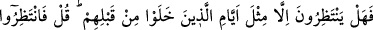
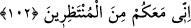
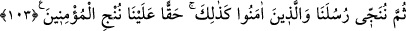

hükmüne göre “inanmayan bir topluma fayda sağlamaz.”
102. Onlar sadece kendilerinden önce gelip geçenlerin başlarına gelen günler
gibisini bekliyorlar öyle mi? De ki: “O halde bekleyin, ben de sizinle beraber
bekleyenlerdenim.”
“Onlar” Mekke kâfirleri ve onlar gibi olanlar “sadece kendilerinden önce gelip
geçenlerin” Nuh Kavmi, Ad, Semud, Eykeliler, altı üstüne getirilen şehirler gibi eski
ümmetlerin “başlarına gelen günler gibisini” öyle bir günü, onların başlarından geçen
olaylar ve başlarına inen ilahi azabın benzerini “bekliyorlar öyle mi?” Çünkü bu
kâfirler de öncekilerin başına gelenlerden başkasını hak etmemektedirler. Bu kâfirler,
böyle bir azap beklemiyorlardı. Fakat azab onlara onu bekleyen bir kimseye ulaştığı
gibi, bekleyen kimseye benzetilmişlerdir. Araplar azâbı ve nimetleri “eyyâm: günler”
diye isimlendirirler. İnsanın başından geçen her hayır ve şer “eyyâm” adını alır.
Mekke kâfirlerini tehdid ederek “De ki: “O halde” akıbetiniz olan azabı “bekleyin,”
onu “ben de sizinle beraber bekleyenlerdenim.” Yahut “Siz benim helak olmamı
bekleyin, ben de sizinle beraber sizin helak olmanızı bekleyenlerden olacağım. Çünkü
akıbet, ilâhî sünnet gereği muttakîlerindir.
103. Sonunda peygamberlerimizi ve îman edenleri kurtarırız. İşte böyle,
üzerimize bir borç olarak mü’minleri kurtarırız.
“Sonunda peygamberlerimizi ve îman edenleri kurtarırız.” Sanki şöyle deniyor: “Bu
ümmetleri helak eder sonra azap indiği sırada peygamberlerimizi ve onlara îmân
edenleri kurtarırız.”
“Kurtarırız” anlamına gelen fiili, geçmiş zamandaki bir durumun anlatılması olarak
anlamak gerekir. Çünkü burada “helak ettik ve kurtardık” mânâları kastedilmiştir.
“İşte böyle” öncekileri kurtardığımız gibi “üzerimize bir borç olarak mü’minleri
kurtarırız.” Yani mü’minleri, bütün sıkıntı ve azaplardan kurtarırız. Burada
peygamberlerin kurtarılmasından bahsedilmemiştir. Bu böyle bir şeye ihtiyaç
olmadığını bildirmek içindir.
Bu âyette kurtuluşun şartının îmandan olduğuna ve bunun Allah Teâlâ’nın bütün